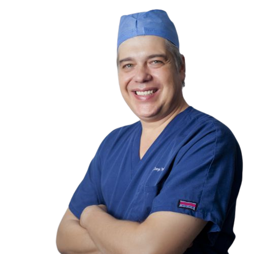

El Dr. Jorge Treviño Garza es un Otorrinolaringólogo en Monterrey
que cuenta con especialidad en Cirugía Plástica Facial, es un médico que constantemente se actualiza
con el fin de mejorar sus servicios a los pacientes.

Servicios del Otorrinolaringólogo en Monterrey
Consulta
Radiofrecuencia de Cornetes
Cirugia endoscópica para sinusitis
Cirugia de Tabique nasal
Endoscopia Nasal
Otorrinolaringología Pediátrica
Te mereces un alto nivel de atención por parte de un Otorrinolaringólogo de vanguardia, por lo que el
Dr. Jorge Treviño Garza especialista en padecimiento de los oídos